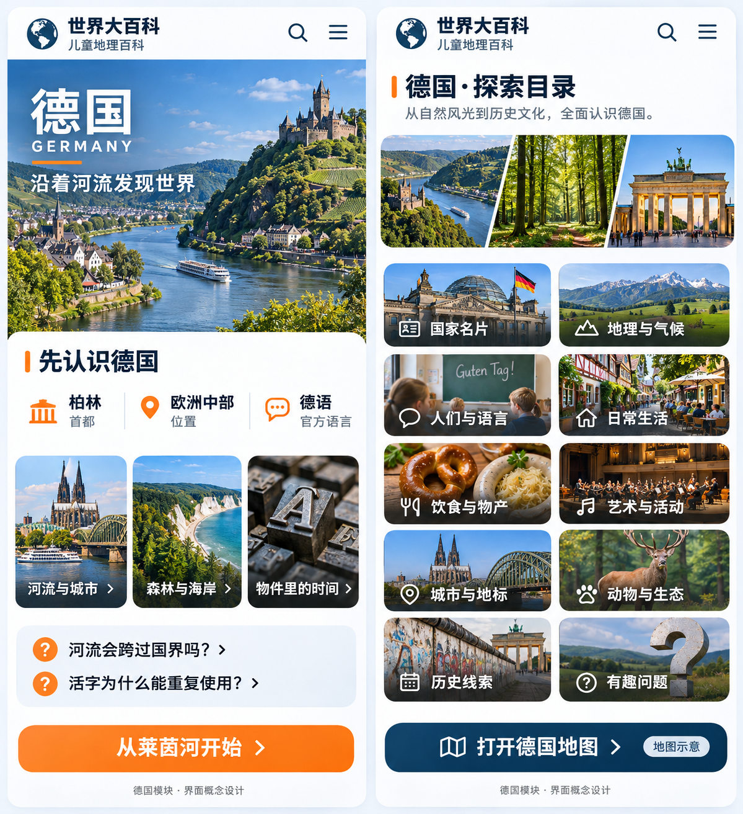
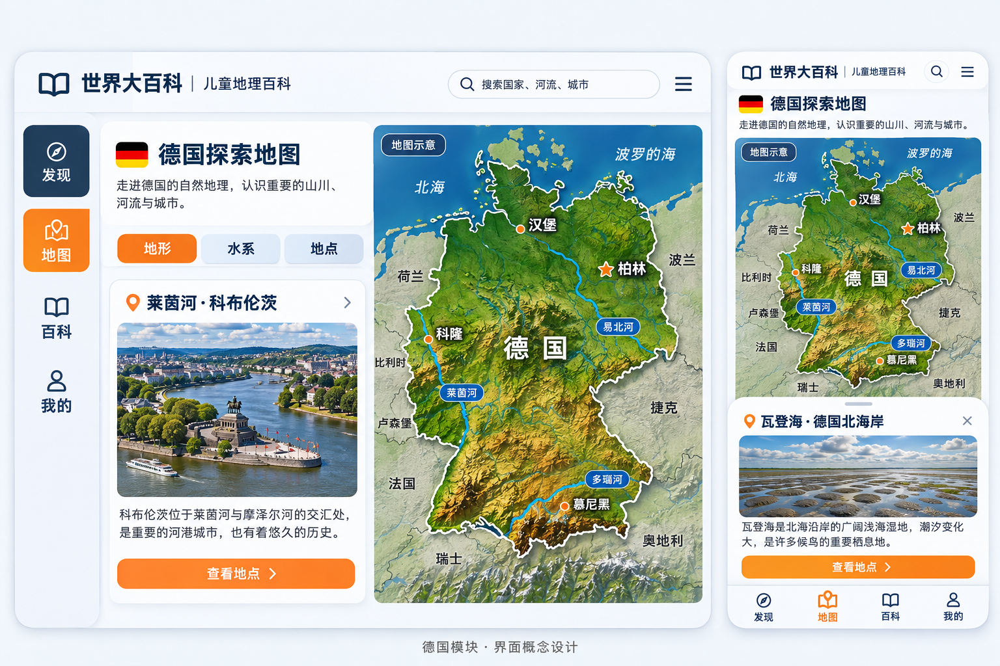
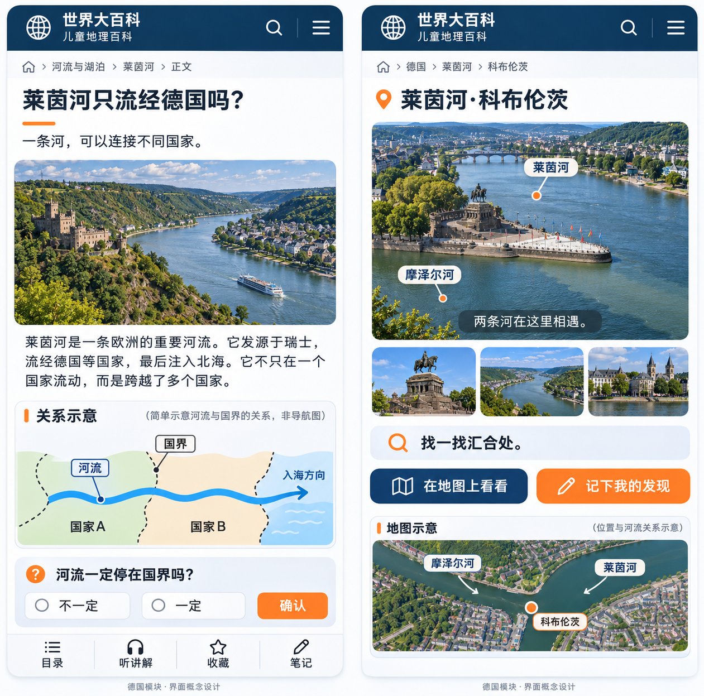
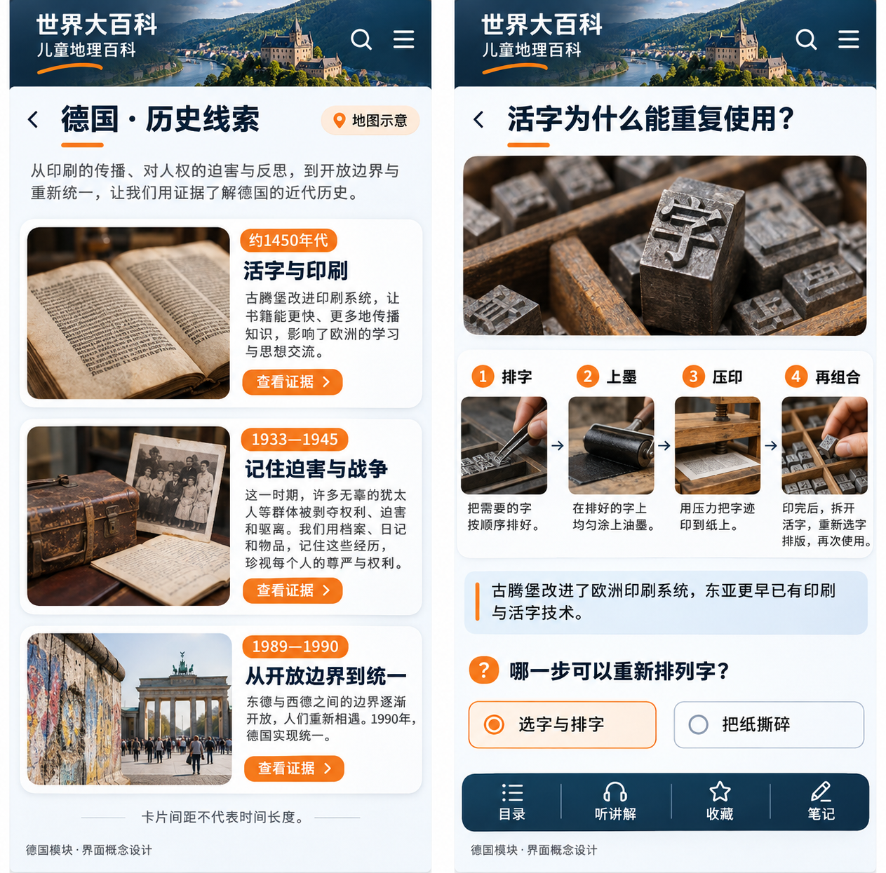
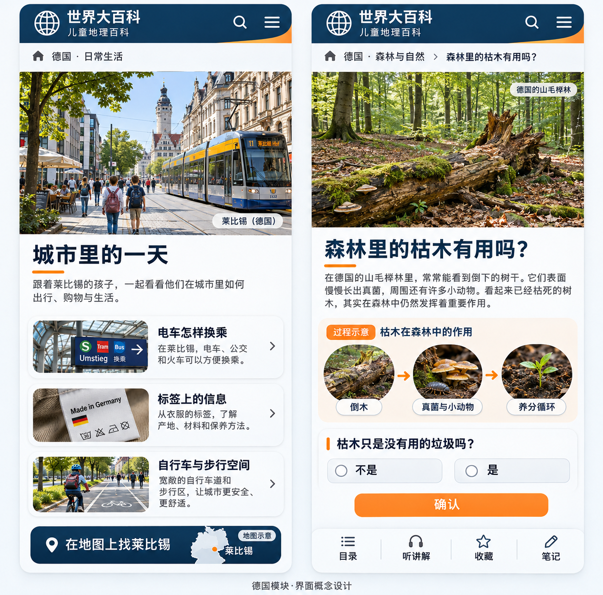
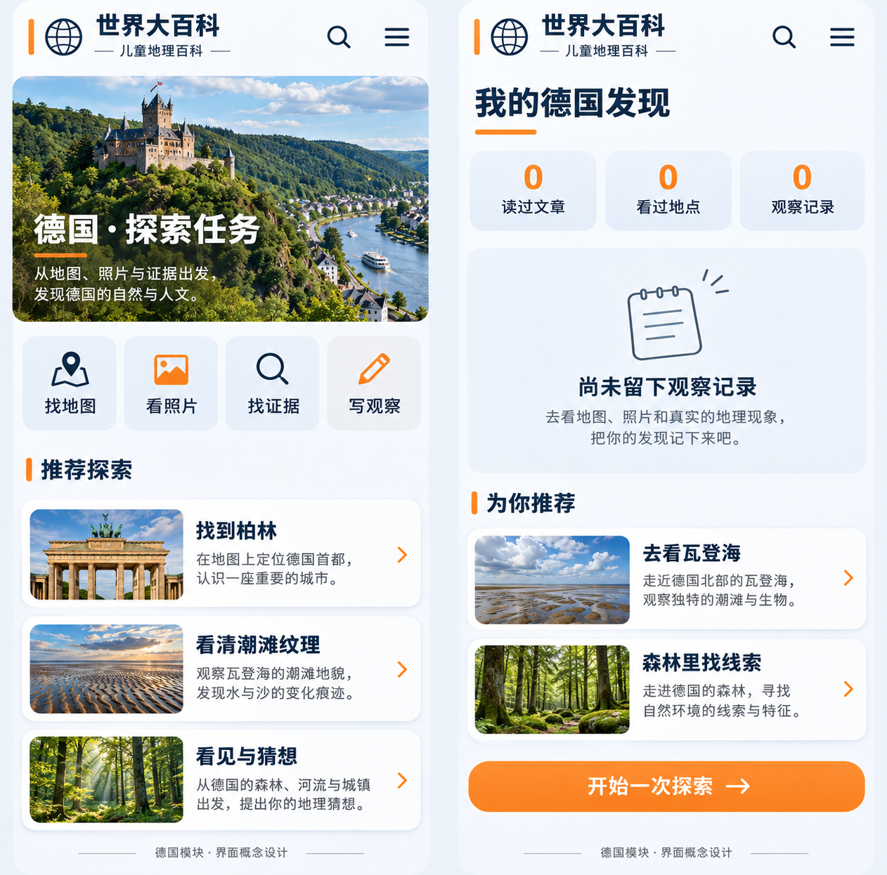
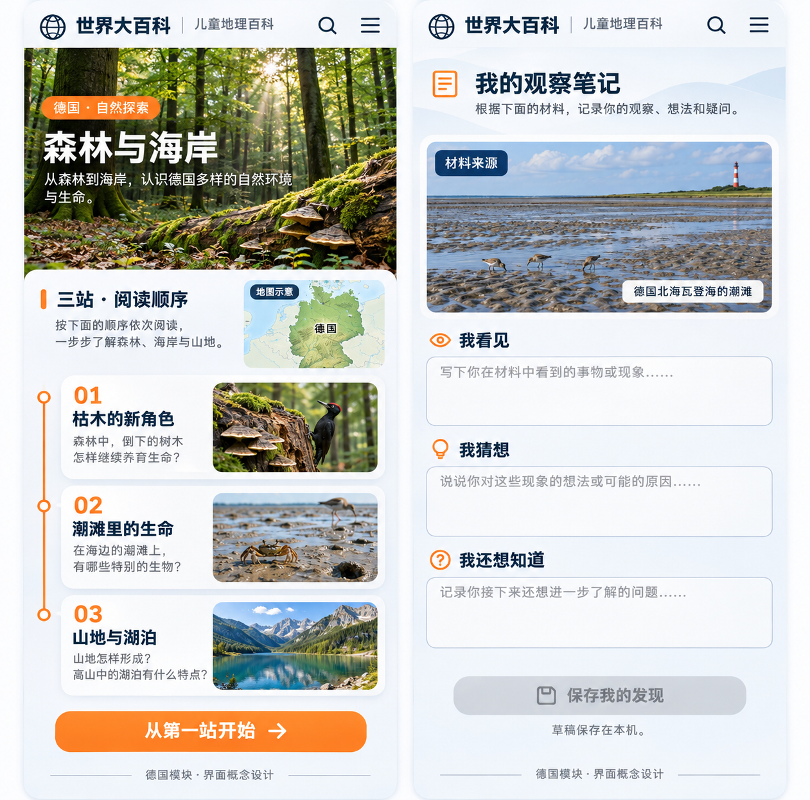

德国 · 沿着河流发现世界
7组效果图 · 14个页面状态 · 设计概念，尚未开发。图片为内置image_gen生成；地理与历史素材正式实现时须核验替换。
详细设计 · 内容清单 · 视觉交接 · 完整提示词
01 国家首页与探索目录

02 德国地图：平板与手机

03 跨境河流阅读与科布伦茨地点

04 历史时间线与活字印刷

05 日常生活与森林生态

06 探索任务与我的发现

07 阅读路线与观察笔记
